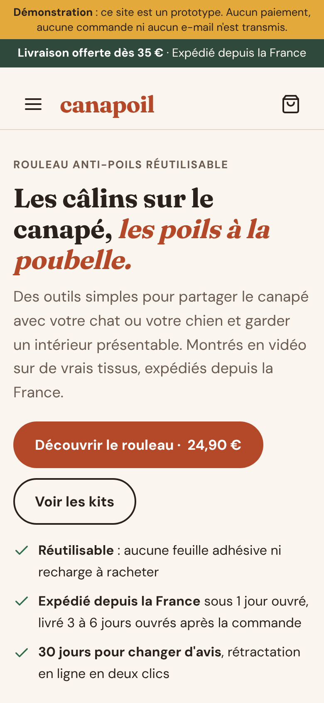
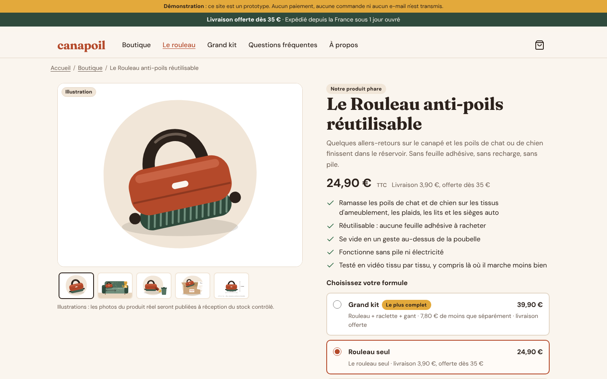

Neuf agents ont étudié le marché, choisi le produit, chiffré l'économie, codé le site, écrit le marketing, puis attaqué leur propre travail. Résultat : un plan exécutable, des probabilités honnêtes et trois décisions qui t'appartiennent.
Phase 0 autorisée : contenu TikTok et liste d'attente, 45 € au total. Aucune vente tant que trois points ne sont pas signés : l'option de financement, l'identité légale de ta société et la recherche de propriété intellectuelle.
Chaque palier multiplie le volume par 10. La barre montre les commandes par jour sur une échelle logarithmique : le palier 4 demande 1 100 fois plus de commandes que le palier 1.
| Bénéfice net / mois | CA HT / mois | Commandes / jour | Pub / mois | BFR | Équipe | Probabilité |
|---|
Paliers 3 et 4 : repères d'échelle obtenus par ratios (marge nette de 12 à 16 %), sans base produit. Source : finance/data.json → paliers.
60 % des Français ont un animal : 16,6 M de chats et 9,6 M de chiens (FACCO-Odoxa 2026). Le problème se filme en 3 secondes : un canapé couvert de poils, un geste, un réservoir plein.


25 pages, panier, paiement Stripe, pages légales, bandeau cookies conforme, bloc GPSR. 417 contrôles automatiques sur 417 réussis, aucune erreur console. Aucun faux avis ni faux compte à rebours. Les illustrations seront remplacées par de vraies photos à réception du stock.
Commande moyenne du mix de lancement : 20 % site, 22 % TikTok en propre, 58 % via des créateurs affiliés. Il reste 6,30 €, soit 27 % du CA HT. La TVA et le port pèsent plus lourd que le produit lui-même.
| Poste | Montant |
|---|
Bénéfice net mensuel avant impôt et avant ta rémunération. Dans le scénario réaliste, le palier 1 arrive en novembre 2027 et ton travail rapporte environ 4 € de l'heure la première année.
Le creux vient du règlement TikTok Shop, 31 jours après livraison pour un vendeur débutant, alors que le fournisseur est payé à la commande.
| Scénario | Commandes 18 mois | CA HT 18 mois | Bénéfice cumulé | Creux de trésorerie | Hypothèse |
|---|
Effet d'une variation de ±20 % de chaque variable sur un mois type du palier 1 (906 € de bénéfice, septembre 2027, scénario réaliste). Baisser le prix de 20 % efface 73 % du bénéfice, à volume constant.
Aucun euro de stock n'est engagé sans signal de demande mesuré. Chaque porte a un critère de passage et un critère d'arrêt.
Option de financement signée, Kbis et TVA avec le comptable, recherches INPI/TMview/DesignView, domaine, comptes sociaux, site en liste d'attente. Budget : 45 €.
2 vidéos par jour, environ 15 démonstrations par produit. Duel entre le rouleau et le tapis de fouille, mesuré par UTM et inscriptions.
Go si les 3 critères sont réunis : 1 vidéo à plus de 50 000 vues avec 1 % de clics ou 150 inscrits ; taux de clics produit ≥ 1,5 % ; 20 commentaires d'intention hors entourage.
Médiateur, éco-organisme, INPI, assurance RC, micro-stock de 105 unités payé, puis ouverture des précommandes. Cash : 910 €.
20 précommandes hors entourage et conversion liste → précommande ≥ 8 %. Sinon : aucun réassort.
3 commandes par jour pendant 7 jours. Ouvre le stock principal et les créateurs à grande échelle.
Environ 202 commandes par mois. Passage à Shopify, import groupé, 3PL. Ensuite seulement : publicité payante et marque propre.
| Signal | Décision |
|---|---|
| 15–20 vidéos d'un produit, aucune au-delà de 5 000 vues | Produit suivant |
| Échantillon inefficace sur 2 tissus sur 3 | Second fournisseur, sinon produit suivant |
| Dessin ou modèle enregistré trouvé | Abandon immédiat |
| Moins de 20 précommandes ou conversion < 8 % | Aucun réassort, retour au contenu |
| Bénéfice < 500 €/mois en mai 2027, ou négatif 3 mois de suite | Changer de héros ou arrêter |
| 3 produits testés sans porte 1 (≈ 6 mois) | Arrêt du projet Perte : 45–90 € |
Le scénario pessimiste déclenche le critère économique en mars 2027. Le dispositif est conçu pour que l'échec coûte moins de 100 €.
Un agent a joué l'investisseur sceptique, l'avocat et le testeur. Un second a corrigé tout ce qui était critique ou majeur, puis a relancé les tests.
| Critique trouvé | Statut |
|---|---|
| E-mail de confirmation annonçant un délai faux en précommande | Corrigé |
| Stock commandé en plein Black Friday, dates de Noël intenables | Corrigé |
| Trois montants de cash incompatibles entre stratégie et finance | Aligné |
| Formulaires serveur exploitables pour de l'hameçonnage | Corrigé |
| Identité légale et fabricants GPSR manquants | À toi |
Le rouleau ressemble au ChomChom Roller. Son brevet (US 8 117 706, Nippon Seal, expiration estimée en 2030) n'a aucun dépôt européen dans sa famille : dépôts US, Japon, Chine (expiré) et Hong Kong (éteint) seulement.
Risque brevet en France : faible à moyen (confiance moyenne). Trois risques restent ouverts :
Sources : Google Patents, Cheddar Creations v. Pawico.
Vendre légalement son propre stock en France impose un médiateur, un éco-organisme, une assurance et un stock payé avant les premiers encaissements. Trois options tiennent la route.
Plan complet, créateurs affiliés dès décembre. Remboursable sans impôt dès que la trésorerie le permet.
Ventes TikTok Shop limitées au stock déjà payé, pas d'affiliés avant le premier règlement. Croissance plus lente, pas de creux en février.
Si la porte 1 n'est pas franchie, ou si a et b sont exclues. Tu gardes le site, la marque et l'audience.
| Autre décision | Recommandation | Quand |
|---|---|---|
| Régime de TVA | Franchise en base tant que le CA reste sous 85 000 € (marge 7,59 € au lieu de 6,30 €), à valider avec un expert-comptable | S1 |
| Objet social du Kbis | Il doit couvrir la vente en ligne de marchandises : Stripe et TikTok Shop le contrôlent | S1 |
| Temps disponible | 25 h par semaine avec le plan allégé ; 35–40 h seulement si tu les as vraiment | S1 |
| Présence à l'écran | Mains et animal au départ, visage dès que possible (les lives l'exigent) | S2 |
| Prix du rouleau | 24,90 € si la médiane TikTok Shop dépasse 16 € ; sinon 19,90 € et Grand kit mis en avant | Avant la porte 1 |
| Assurance RC produits | Avant de commander le stock : en important, ta société répond comme le fabricant | Avant la porte 1 |
Le détail heure par heure, jusqu'au jour 14, est dans docs/demarrage-J1-J14.md. Une règle : rien n'avance tant que le résultat du jour précédent n'est pas coché.
brand.json → identité. generer.py --publication passe sans erreur. 3 h, 0 €.ccr-e41ac827-z9ec4r9 agents, 1 009 actions, environ 3 h 45 de travail en parallèle. Tous les chiffres viennent d'un seul fichier source, strategie/brand.json.
recherche/01-marche-niches.md : 15 niches notées, top 502-acquisition.md : canaux à 0 €, benchmarks03-legal-ops.md : droit, GPSR, douane 2026strategie/04-strategie.md + brand.jsonfinance/modele_financier.xlsx : 6 onglets en formules05-analyse-financiere.mdsite/ : 25 pages, Stripe, Cloudflareshopify-kit/ : CSV d'import, pages, thème, appsdocs/demarrage-J1-J14.mddocs/pilotage.xlsx : suivi hebdomadairedocs/gabarits/ : étiquettes, noticesdocs/revue-red-team.md